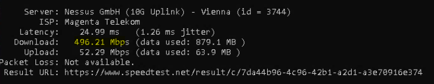
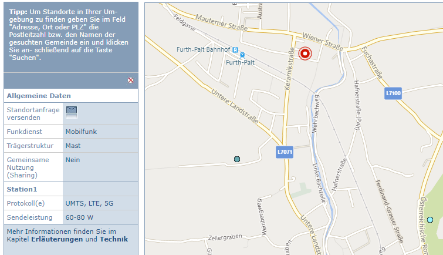
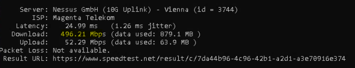

{kind=link}
{kind=link}
{kind=link}
{kind=link}

Ich denke Magenta erfüllt den Vertrag

Ich hab seit dieser Woche die 5G Outdoorbox mit Tarif 500/50. Da ich zum Lieferzeitpunkt noch nicht alle Teile für die nach meiner Meinung nach optimalen Installation der ODU hatte, hab ich mir bezüglich der Geschwindigkeit keine Sorgen gemacht. Es war nur mal ein Provisorium am Balkon. Den Sender habe ich über den Senderkataster gefunden und er ist vom Balkon aus Sichtbar.
In der Zwischenzeit ist die ODU an ihren entgültigen Platz gewandert. Eine Masthalterung wurde an den Balkon geschraubt und darauf die ODU. Eigentlich perfekt in Richtung ges Sendemastens ausgerichtet. Wie schon erwähnt hat die ODU Sichtverbindung zum Masten. Auf welcher Frequenz der sendet, kann ich nicht sagen.
Langer Rede kurzer Sinn, ich bekomme im Schnitt über den Tag "nur" 250 mBit/s im Download - ebenso in der Nacht, wo der Datenverkehr geringer ist. Upload ist in Ordnung. Ebenso Jitter und Latenz.
Die Balken in der Weboberfläche sind voll und die LED leuchtet grün.
Die Inneneinheit verwende ich nicht, da ich eine Zyxel Flex 50 verwende. Die sollte aber auch kein Problem sein.
Gemessen wird automatisiert alle 30 Minuten mit dem CLI Tool von Speedest und immer mit dem Nessus Server. Mit diesem habe ich die besten Erfahrungen gemacht.
Meine Frage wäre, ob und wie man die Ausrichtung optimieren könnte. Gibt es Tools oder was auch immer? Oder geht bei mir (3511 Furth bei Göttweig/Niederösterreich) an dem einen Masten einfach nicht mehr?
Im Zweifel wurde mir vom Support auch schon bestätigt, dass ich auf das niedrigere und natürlich auch günstigere Paket umsteigen könnte. Das ist schon mal gut. 250 sind jetzt auch nicht so schlecht, aber 500 (oder annähernd) wären natürlich viel schöner.
Bearbeitet von hfichtinger
Hey
@hfichtinger
Welche Geschwindigkeiten du erreichen kannst hängt von der Art von 5G ab, welche bei dir verfügbar ist.
Mit gigabit-fähigem 3,5 GHz 5G (Band n78) sollte auch mehr möglich sein.
Mit 700 MHz 5G (Band n28) oder 2100 MHz (Band 1) 5G sind 250 Mbit/s schon ziemlich gut, besonders wenn es relativ stabil ankommt.
In diesem Fall ist sogar Band n78 verfügbar vom Sendemasten im Waldstück östlich neben der L100 an dieser Stelle .
Hast du die Outdoor-Einheit auf diesen Sendemasten ausgerichtet?
vor 4 Stunden schrieb NTM:Welche Geschwindigkeiten du erreichen kannst hängt von der Art von 5G ab, welche bei dir verfügbar ist.
Mit gigabit-fähigem 3,5 GHz 5G (Band n78) sollte auch mehr möglich sein.
Mit 700 MHz 5G (Band n28) oder 2100 MHz (Band 1) 5G sind 250 Mbit/s schon ziemlich gut, besonders wenn es relativ stabil ankommt.
Guten Morgen
Wie gesagt, die Frequenz(en) kenne ich nicht
Die 250 kommen wie du auch siehst, relativ stabil an.
vor 4 Stunden schrieb NTM:In diesem Fall ist sogar Band n78 verfügbar vom Sendemasten im Waldstück östlich neben der L100 an dieser Stelle .
Hast du die Outdoor-Einheit auf diesen Sendemasten ausgerichtet?
Nein, Ich hab einen anderen Sender genommen. Rein von der Ausrichtung sollte "mein" Sender besser sein. Zum einen ist er viel näher und zum anderen habe ich, wie gesagt, Sichtverbindung. Bei dem von dir erwähnten hab ich zumindest ein Hausdach dazwischen.

Auf der Karte der links neben der L7071. Den anderen könnte ich mal probieren.
vor 4 Stunden schrieb NTM:Hast du sichergestellt, dass die Zyxel Firewall durch die Konfiguration keinen Flaschenhals darstellt?
Kann ich eher ausschließen, da ich die ODU auch direkt am Notebook angeschlossen hatte und es da auch nicht anders war
vor 4 Stunden schrieb NTM:Sind keine Sicherheitsfunktionen aktiv, welche eine verringerte Bandbreite zur Folge haben?
Auf der ODU ist das alles aus.
vor 4 Stunden schrieb NTM:Wurden QoS Einstellungen vorgenommen?
Dazu gibt es bei der ODU keine Einstellungen.
Was ich noch vergessen hatte zu erwähnen ist, dass ich den Zugangspunkt für die öffentliche IP verwende. Macht aber auch keinen Unterschied. Auch der Bridge Mode (bei Neuanlage eines Einwahlpunktes) ändert nichts.
Bearbeitet von hfichtingerSo, mit Google Maps hab ich mir mal beide Sender rausgesucht und mit Linien (Entfernungsmessung) verbunden. Den einen im Ort kannte ich ja schon, aber nur zur Sicherheit. Die Linien deshalb um mich bei der Ausrichtung an Gebäuden orientieren zu können.
Dann auf den "alternativen Sender" ausgerichtet und die ODU natürlich neu gestartet. Funktioniert auch (wobei ich ja nicht weiß, ob dieser Sender jetzt auch tatsächlich verwendet wird) und zumindest die erste Messeung hat um 50mBit/s mehr an Download gebraucht. Sie ergab 300mBit/s.
Ich werde das beobachten.
vor 4 Stunden schrieb hfichtinger:Nein, Ich hab einen anderen Sender genommen. Rein von der Ausrichtung sollte "mein" Sender besser sein. Zum einen ist er viel näher und zum anderen habe ich, wie gesagt, Sichtverbindung. Bei dem von dir erwähnten hab ich zumindest ein Hausdach dazwischen.
Auf der Karte der links neben der L7071. Den anderen könnte ich mal probieren.
Dieser Sender ist ein A1 Sender.
Der andere Sendemast, welcher auch im Bild zu sehen ist, wird von allen drei Netzbetreibern verwendet.
vor 4 Stunden schrieb hfichtinger:vor 8 Stunden schrieb NTM:Sind keine Sicherheitsfunktionen aktiv, welche eine verringerte Bandbreite zur Folge haben?
Auf der ODU ist das alles aus.
vor 8 Stunden schrieb NTM:Wurden QoS Einstellungen vorgenommen?
Dazu gibt es bei der ODU keine Einstellungen.
Ich meinte auf der Zyxel Firewall.
Aber wenn mit einem direkt verbundenen Laptop kein Unterschied messbar ist, dann sollte es nicht an den Einstellungen der Firewall liegen.
vor 4 Stunden schrieb hfichtinger:Wie gesagt, die Frequenz(en) kenne ich nicht
Bei der 5G Box Outdoor kann leider die Sender-ID nicht ausgelesen werden und auch nicht welches Band verwendet wird.
vor 4 Stunden schrieb hfichtinger:Was ich noch vergessen hatte zu erwähnen ist, dass ich den Zugangspunkt für die öffentliche IP verwende. Macht aber auch keinen Unterschied. Auch der Bridge Mode (bei Neuanlage eines Einwahlpunktes) ändert nichts.
Öffentliche IP oder nicht sollte da keinen Unterschied machen.
vor 3 Stunden schrieb hfichtinger:So, mit Google Maps hab ich mir mal beide Sender rausgesucht und mit Linien (Entfernungsmessung) verbunden. Den einen im Ort kannte ich ja schon, aber nur zur Sicherheit. Die Linien deshalb um mich bei der Ausrichtung an Gebäuden orientieren zu können.
Dann auf den "alternativen Sender" ausgerichtet und die ODU natürlich neu gestartet. Funktioniert auch (wobei ich ja nicht weiß, ob dieser Sender jetzt auch tatsächlich verwendet wird) und zumindest die erste Messeung hat um 50mBit/s mehr an Download gebraucht. Sie ergab 300mBit/s.
Ich werde das beobachten.
Bitte berichte, wie sich die neue Ausrichtung verhält.
vor 3 Stunden schrieb NTM:Ich meinte auf der Zyxel Firewall.
Ich kann die FW kurzfristig für einen Test sicher deaktivieren.
vor 3 Stunden schrieb NTM:Öffentliche IP oder nicht sollte da keinen Unterschied machen.
Das stimmt. Es ändert sich nichts.
vor 3 Stunden schrieb NTM:Dieser Sender ist ein A1 Sender.
Der andere Sendemast, welcher auch im Bild zu sehen ist, wird von allen drei Netzbetreibern verwendet.
Das wußte ich nicht. Danke für die Information. Leider steht im Senderkataster nicht, welcher Betreiber/welche Betreiber den Mast verwenden. Verstehe nicht warum, wird aber seine Gründe haben. Würde aber gerade so eine Ausrichtung wesentlich vereinfachen.
Oder gibt es eine andere Seite die diese Information enthält? Sollte halt auch relativ aktuell sein.
vor 3 Stunden schrieb NTM:Bitte berichte, wie sich die neue Ausrichtung verhält.
Mit der neuen Ausrichtung auf den richtigen Sender ist es jetzt schon besser. Zwischen 250 und 300 (ja, diese Marke wurde schon geknackt). Und um die Zeit, war auch nix los am Netz.
Die Messungen werden auf einer virtuellen Win10 gemacht, die über den Switch direkt miti der Zyxel verbunden ist. Also nicht über WLAN.
Ich hab mir jetzt auch noch eine Mastverlängerung von 1m bestellt. Somit kommt die ODU noch weiter in die Höhe. Schau ma mal.
Der Flaschenhals ist eindeutig die Zyxel. Deaktiviere ich alles (Policy Control, ADP und Session Control) dann komm ich auf bis zu 384 mBit/S.
Ich bin da etwas ... sehr enttäsuch, um es gelinde zu sagen. Ich überlege startk, ob ich nicht die Innenheit aus dem Magenta Paket verwende, die sollte es können, wenn sie schon damit angeboten wird.
Ich denke ich habe jetzt das absolute Maximum aus meinem Standort herausgeholt. Die Policies auf der Zyxel deaktiviert. MTU am WAN Port angepasst und dann noch das
Beim Hornbach einen 2m Stahlmast geholt und in die Halterung gesteckt. Ziemlich ganz oben die Antenne montiert. Ausgerichtet.
Ich hab jetzt am Switch bis zu 400mBit/s gemessen. Ich denke das passt. Mehr schaff ich nicht.
Sowas ist immer die perfekte Config.
Externe Antenne und dann sind mal viele Reflexionen von Innenräumen weg. Das hast du gut gemacht - Danke für das Foto!
Danke. Perfekt wäre die Monatage an der Stange der Sat-Antenne. Aber ich möchte ungern aufs Dach steigen.
ich sehe das auch als eine gewisse "Bringschuld" gegenüber dem Dienstanbieter. Ich kann mich nicht über eine schlechte Verbindung beschweren, wenn das Problem auf meiner Seite liegt. Das heißt, zuerst meine Konfiguration nach meinen Möglichkeiten bestmöglich anpassen, und dann schreien. ;-)
Die Zyxel fliegt wahrscheinlich raus und wird gegen einen OpenWRT Router/Firwall ersetzt. Das dauert aber noch etwas. Bin gespannt was der dann mach.
Ja wobei wenn die Werte jetzt super sind, dann passt ja alles.
Was mich interessieren würde.
Ich hab meine LTE Antenne ganz oben am Dach mit 10 Meter Kabel. Da ist zwar die Dämpfung durch die 10 Meter nicht ganz ohne aber das Signal kommt trotzdem super an.
Bei Sturm oder starken Regen merke ich aber, wie das Signal kurzzeitig runter geht.
Würde mich interessieren, ob du da auch was merkst...
Die ODU ist mit einem Netzwerkkabel mit dem Router verbunden, nicht mit einem Koax.
Aber ich werde mir das natürlich ansehen. Hoffe nur, dass das Wetter in den nächsten drei Wochen nicht schlecht ist ;-)
Alles klar.
Ja berichte mal, wenn es passt. Danke!
Guten Morgen
Gestern und in der Nacht von gestern auf heute hat sich einiges getan. Für OpenWRT musste zuerst ein Raspberry her. Da die Neupreise derzeit sehr hoch sind, wurde ein gebrauchter Raspberry 4 mit 4GB RAM erstanden. Ein Set mit Gehäuse, Netzteil und SD Karte. Der kam gestern an. Auf die SD das OpenWRT Image aufgespielt, ein "Testlabor" eingerichtet zum konfigurieren.
Am Abend war ich dann soweit, dass ich die Zyxel deaktivieren konnte. Der Wechsel ging flott von statten und dann gespanntes Warten.
Das sind die Werte von heute
Wie man sieht und mit den bisherigen Werten vergleicht, ist es eine massive Steigerung. Mein Spitzenwert war bei 480mBit.
Ah ja, und dieser Wert wurde gestern (oder war es schon heute) bei mäßigem Regen erreicht ;-)
Ja das sind mal coole Nachrichten.
Hat sich definitiv gelohnt.
Mich wundert es ja sowieso, dass du überhaupt noch einen Raspi bekommen hast - die sind aktuell echt nicht mehr so leicht zu bekommen.
Danke für die RM.
Gerade eben schrieb Christian_E:Mich wundert es ja sowieso, dass du überhaupt noch einen Raspi bekommen
Beim Jeff gibt es sie, auch die Sets. Aber wie man aus den Kommentaren entnehmen kann, sind die Preise massiv (50% und mehr) gestiegen. Auf Willhaben gibt es etliche zu vernünftigen Preisen. Ich hab für das Set €100,-- gerade aus bezahlt. Inkl. Gehäuse mit Lüfter usw.
Ja guter Tipp.
Die Dinger kann man unbekümmert auch gebraucht kaufen. Für den 4er sind die 100 Euro ok aber ich hab auch schon Angebote gesehen, die für den 3B+ auch über 100 wollten.

Ich denke Magenta erfüllt den Vertrag

Kann man sich so nur wünschen!!!